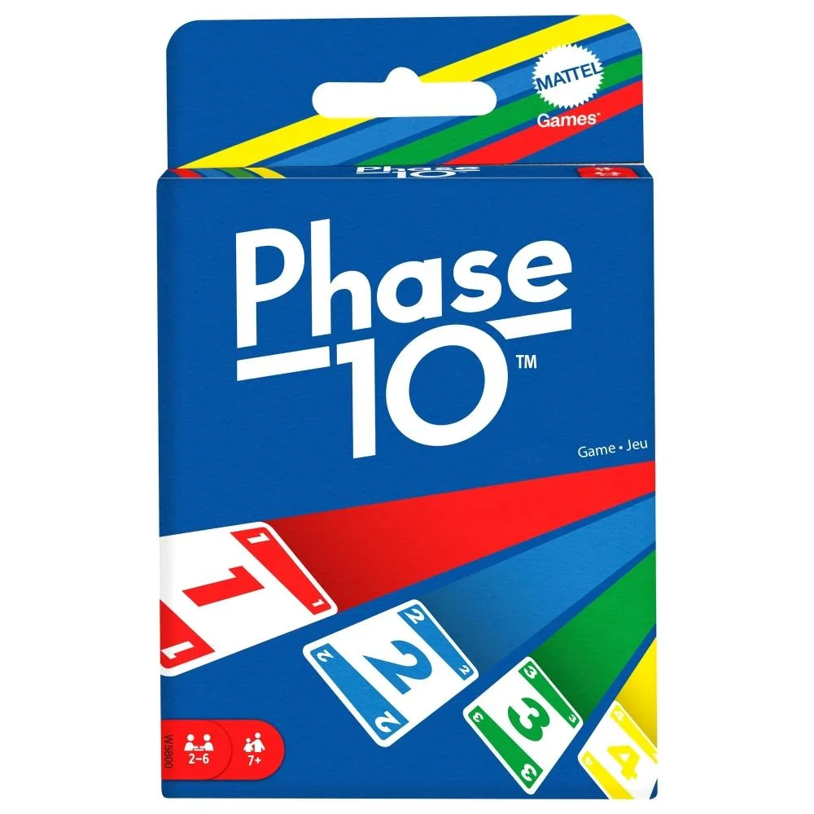
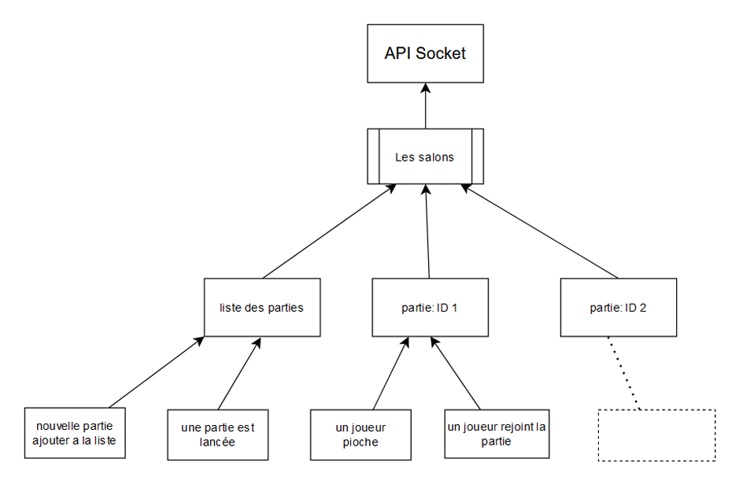

Context
Mon travail
Récap
Phase 10 est un jeu de cartes créé par Kenneth Johnson, où les joueurs doivent compléter des "phases" dans un ordre précis. Chaque phase consiste en une combinaison de cartes (comme des suites ou des ensembles). Le jeu se joue en plusieurs tours, et le but est de terminer chaque phase avant les autres joueurs. Le premier joueur à finir toutes ses phases remporte la partie. C'est un jeu stratégique et amusant, où il faut bien gérer ses cartes et anticiper les actions des autres joueurs.
Pour ce projet, nous devions recréer le jeu Phase 10 en ligne, accessible depuis un navigateur, afin de permettre des parties multijoueur allant de 1 à 6 joueurs. Les mêmes règles du jeu doivent être respectées, avec la possibilité de jouer en étant connecté ou non. De plus, il doit être possible de consulter la liste des parties en cours ainsi que le classement des joueurs.
Pour réaliser ce projet, nous étions une équipe de 4 personnes, chacune ayant sa propre spécialité. Nous avons utilisé Angular pour la partie visuelle, Node.js pour l'API, et Socket.io pour permettre les interactions en temps réel entre les joueurs.
Pour mon travail, je me suis concentré sur les animations du jeu ainsi que sur la mise en place et l'utilisation des sockets pour la gestion du temps réel dans l'application. En effet, dans un jeu en ligne, il est inefficace d'envoyer des requêtes répétées à l'API pour vérifier si, par exemple, un joueur a posé une carte. Il est préférable d'utiliser des sockets, qui permettent à l'utilisateur d'écouter des événements, comme le fait de poser une carte, et d'actualiser l'affichage sans avoir à passer par une requête API. Ce fonctionnement permet de réduire le nombre de requêtes et d'éviter de surcharger l'API. Pour cela, j'ai utilisé Socket.io avec Angular. Sur le plan technique, l'utilisateur est authentifié via un identifiant unique et une clé d'autorisation (« token »), ce qui permet de maintenir la connexion entre les actions de l'utilisateur et l'API. Dans notre architecture, les sockets sont organisés en "salons" et en "sous-salons". Par exemple, pour qu'un utilisateur rejoigne une partie, il se connecte au salon « party-{idDeLaPartie} » et peut ensuite échanger avec les autres joueurs connectés à ce salon. Ce salon représente donc une partie.
Une fois connecté, l'utilisateur peut effectuer des actions dans des sous-salons associés à cette partie, ce qui permet de mieux gérer les différentes interactions. Par exemple, si un utilisateur pioche une carte dans la partie 1, il enverra l'action au sous-salon « piocher » situé dans le salon « partie 1 ». L'algorithme traitera cette demande et renverra la carte piochée par l'utilisateur.
Au cours de ce projet, j'ai beaucoup appris sur l'utilisation des sockets pour la gestion du temps réel dans une application. J'ai découvert comment organiser les connexions en « salons » et « sous-salons » pour séparer les différentes actions des utilisateurs et permettre des échanges efficaces entre eux. Cette architecture m'a permis de mieux comprendre comment gérer des événements utilisateurs en temps réel, comme le fait de poser une carte ou de piocher une carte dans le jeu. J'ai aussi appris à utiliser Socket.io avec Angular pour maintenir une connexion stable entre les utilisateurs et l'API, tout en réduisant le nombre de requêtes nécessaires. Cela m'a permis de traiter des actions sans surcharger l'API, en envoyant les informations pertinentes uniquement lorsque c'était nécessaire, et de gérer les résultats de manière plus fluide et réactive. Cette approche m'a vraiment permis d'améliorer mes compétences en gestion d'événements et de résultats en temps réel.